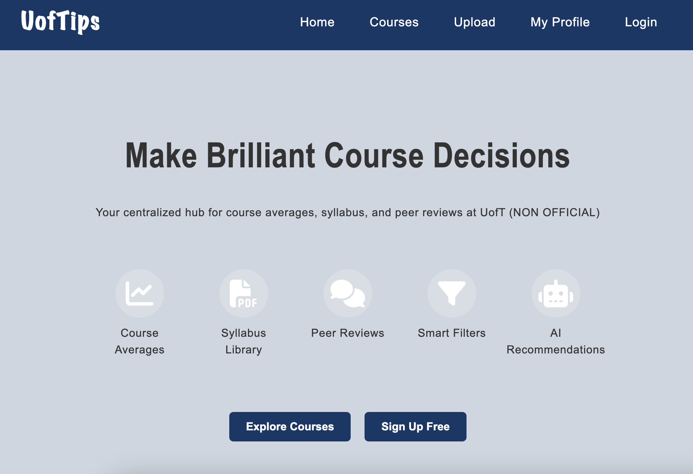
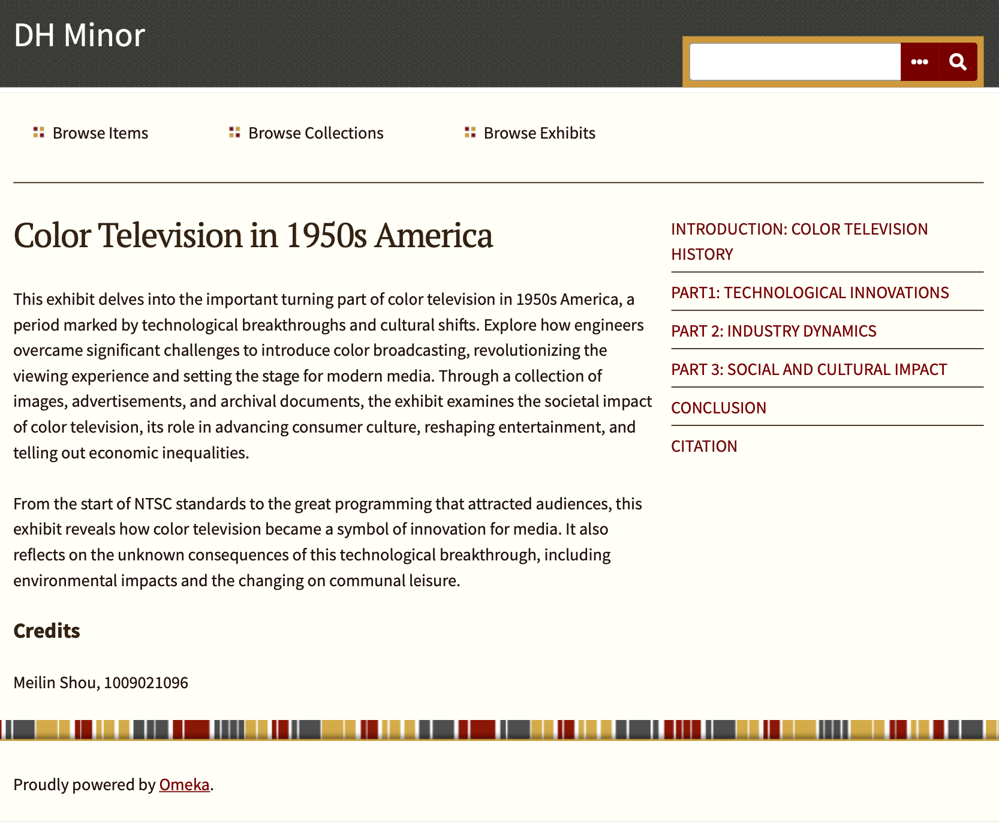

Hello! My name is Meilin Shou. I am a Master of Information student at the University of Toronto, concentrating in Information System Design, with a strong analytical background in mathematics.
I blend hands-on experience in data tracking, process optimization, and digital platform development to deliver user-centered solutions. With a passion for intersecting design, technology, and media, plus expertise in video editing and cross-platform operations, I’m actively seeking Co-op / Internship roles for Summer and/or Fall 2027.
Sept 2026 — Jun 2028
Toronto, ON
Building on an analytical background to deliver user-centered solutions, focusing on systems analysis, digital platforms, and human-centered design.
Relevant coursework includes:
Information Systems, Services & Design, Programming for Data Science, Systems Analysis & Process Innovation, System Requirements & Architectural Design, Data Modeling & Database Design, Usability Assessment, Introduction to Data Analytics.
Sept 2022 — Jun 2026
Toronto, ON
Relevant coursework includes:
Mathematics: Calculus I–II, Linear Algebra I–II, Multivariable Calculus, Ordinary Differential Equations, Complex Variables, Linear Programming, Combinatorics, Groups & Symmetry;
Book & Media Studies: Digital Humanities, Media Identities, Social Research Methods, Social Media & Digital Platforms.
Sept 2024 — Present
Toronto, ON
May 2024 — Jun 2024
Remote
March 2024 — Present
Remote

Developed an interactive digital exhibition using Omeka as part of the DHU235 course, conducting primary source research to curate a collection of 1950s American media and analyze its societal impact.

This research presents a data-driven methodology to enhance computer science education platform interfaces through behavioral analysis. By analyzing interactive behaviors of 2,847 students across three popular platforms, we identified key behavioral indicators of learning success and developed an optimization framework that resulted in a 34% increase in task completion and a 27% improvement in knowledge retention.
Keywords: user behavior analytics; interface optimization; computer science education; e-learning platforms; adaptive UI